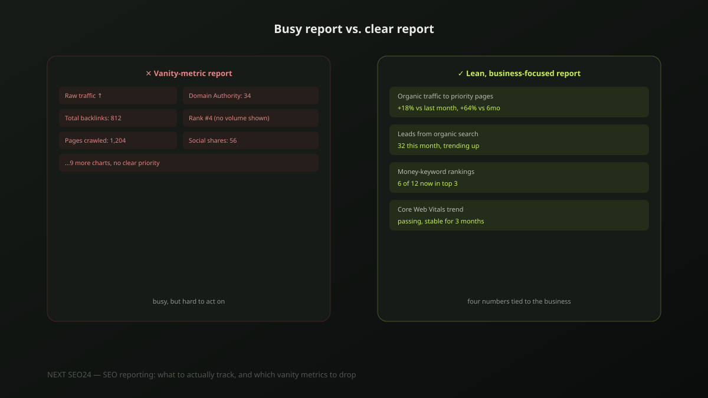

SEO reporting: what to actually track, and which vanity metrics to drop
A report with fifteen charts and a rising line for "Domain Authority" looks busy — and tells a client almost nothing about whether their business is actually getting more customers. Here's what a monthly SEO report should actually track, and the metrics worth cutting because they measure activity, not outcome.
Why most SEO reports fail to build trust
Most reports fail for one of two reasons: too many metrics with no clear priority, so the reader can't tell what actually matters, or the wrong metrics entirely — numbers that move regardless of whether the SEO work is helping. A stakeholder who can't connect a report to their business results loses confidence in the work itself, even when the work is genuinely effective. Reporting the right handful of numbers, clearly, does more for trust than reporting everything available.
Vanity metrics that look impressive but say almost nothing
- Raw, unsegmented traffic. A big month-over-month traffic number with no breakdown by page or intent can be inflated by an unrelated viral post or a seasonal, non-buying query — it says nothing about business impact on its own.
- Domain Authority (DA) or similar third-party scores. These are metrics invented by SEO tool vendors, not Google — Google doesn't calculate, use, or even recognize "Domain Authority" as a concept. It can loosely track backlink growth over long periods, but month-to-month DA movement reported as if it reflects real ranking progress is misleading.
- Keyword rankings without volume or intent context. Ranking #3 for a keyword nobody searches, or a keyword with no buying intent, isn't meaningful progress — the position number alone tells you nothing about whether it matters.
- Total backlinks acquired. Ten low-quality links add a number to a slide without adding real authority — quality and relevance matter far more than count, and reporting count alone can even reward the wrong kind of link building.
What to actually track
- Organic traffic segmented by landing page and intent. Growth on the pages that actually drive business — service pages, high-intent blog content — matters far more than sitewide totals.
- Conversions or leads attributed to organic search. Sessions are a proxy; enquiries, form fills or WhatsApp clicks from organic traffic are the actual outcome a business cares about.
- Rankings for a defined set of priority "money" keywords. Not every keyword the site happens to rank for — the specific terms tied to real buying intent, tracked consistently over time.
- Core Web Vitals trend, not a single snapshot. A month-over-month trend line shows whether technical health is improving or degrading; one isolated score doesn't.
- Indexed pages vs. total pages. A growing gap between pages published and pages actually indexed is an early warning sign worth surfacing before it becomes a bigger problem.
Match the metric to the audience
A marketing manager who lives in the account week to week can handle — and often wants — more granular detail: individual keyword movement, page-level traffic breakdowns, technical fix logs. A CEO or business owner generally wants three or four numbers tied directly to revenue: leads generated, cost per lead relative to other channels, and overall trend direction. Sending the marketing manager's level of detail to a CEO usually reads as noise, not thoroughness.
A realistic monthly cadence
SEO moves slowly enough that a single month's numbers can be genuinely misleading in isolation — report trend over 3-6 months alongside the monthly snapshot, not just the latest number on its own. A single down month against a six-month upward trend reads very differently from the same down month with no context at all, and both are honest ways to present the same data — only one actually informs the reader.
A sample simple reporting structure
- Organic traffic to priority pages, this month vs. last month vs. 6-month trend
- Leads/conversions attributed to organic, with the trend line, not just the total
- Ranking movement for the defined money-keyword set
- Core Web Vitals pass/fail trend
- What changed this month (content published, technical fixes) and why, in plain language
- One clear recommendation or next priority, not a list of everything possible
If your current reports feel busy but hard to act on, send us an example — we'll show you what a leaner, clearer version would actually track.
Frequently asked questions
Is Domain Authority (DA) worth including in an SEO report?
Generally no, or only as a minor footnote. Domain Authority is a third-party metric from a specific SEO tool vendor — Google doesn't use it, calculate it, or reference it in any way. It can be a rough directional signal over long periods, but reporting month-to-month DA changes as if they reflect Google's own evaluation of the site is misleading.
How often should keyword rankings actually be checked?
Weekly or monthly tracking is enough for reporting purposes; daily rank-checking mostly captures normal algorithmic noise rather than meaningful movement. Rankings for any given keyword fluctuate day to day even with zero changes to a site — checking too frequently just adds noise a client has to be talked through for no real benefit.
What's the most commonly over-reported metric that should be dropped?
Raw, unsegmented organic traffic. A big month-over-month traffic number with no breakdown by landing page, intent or conversion says almost nothing about business impact — a spike from an unrelated viral post or a seasonal, non-buying query can inflate it without any real gain. Traffic segmented by page and tied to actual leads or conversions is what actually shows whether SEO is working.
Tired of SEO reports that are busy but hard to act on?
Send us an example of your current report — we'll show you what a leaner, business-focused version would actually track.
Chat on WhatsApp →